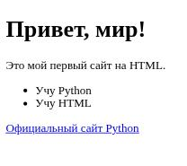

HTML: структура веб-страницы
HTML — язык разметки, а не программирования: он описывает структуру, а не поведение.
HTML (HyperText Markup Language — язык гипертекстовой разметки) описывает не поведение и не внешний вид, а структуру страницы: где заголовок, где абзац текста, где картинка, где ссылка. HTML — язык разметки, а не язык программирования: в нём нет условий, циклов или переменных, только описание того, что и в каком порядке показать.
<!doctype html>
<html lang="ru">
<head>
<meta charset="utf-8">
<title>Моя первая страница</title>
</head>
<body>
<h1>Привет, мир!</h1>
<p>Это мой первый сайт на HTML.</p>
<ul>
<li>Учу Python</li>
<li>Учу HTML</li>
</ul>
<a href="https://python.org">Официальный сайт Python</a>
</body>
</html>
<h1> открывает заголовок, </h1> (со слэшем) его закрывает — как открывающая и закрывающая скобки в Python. Всё, что между ними, — содержимое этого элемента (тега). У некоторых тегов, например <img>, закрывающей пары нет — им нечего оборачивать, вся информация уже помещается в атрибуты.Атрибуты — дополнительные свойства тега
Внутри открывающего тега можно указать атрибуты — пары
имя="значение". У ссылки <a>
атрибут href задаёт адрес, у картинки
<img> — src задаёт файл, а
alt задаёт текстовое описание на случай, если картинка не
загрузилась или страницу читает программа для незрячих пользователей:
<img src="kotik.jpg" alt="Рыжий кот спит на подоконнике">Частые теги
| Тег | Что описывает |
|---|---|
<h1>…<h6> | Заголовки от самого важного (h1) до самого мелкого (h6) |
<p> | Абзац текста |
<ul> / <li> | Список и его пункты |
<a href="…"> | Ссылка на другую страницу |
<img src="…" alt="…"> | Изображение с текстовым описанием |
<label> / <input> | Поле формы и его подпись |
h1-h6 задают логическую структуру страницы, как оглавление книги: h1 — главный заголовок, у него на странице обычно один, а h2 — заголовки разделов внутри. Программы для чтения с экрана и поисковые системы используют именно эту структуру, а не то, крупным ли шрифтом что-то нарисовано.Формы — первый шаг к разделу 22.13
Форма собирает то, что ввёл пользователь, и отправляет это на сервер:
<form>
<label for="imya">Ваше имя</label>
<input type="text" id="imya" name="imya">
<button type="submit">Отправить</button>
</form><label for="imya"> связан с
<input id="imya"> по совпадающему идентификатору — клик
по подписи ставит курсор в поле, а программа для чтения с экрана озвучивает подпись, когда
поле получает фокус. Раздел 22.13 покажет, что происходит с этими данными на сервере.